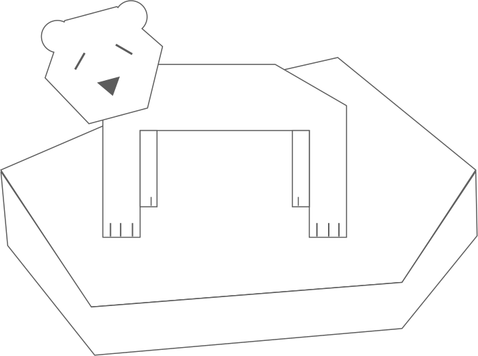
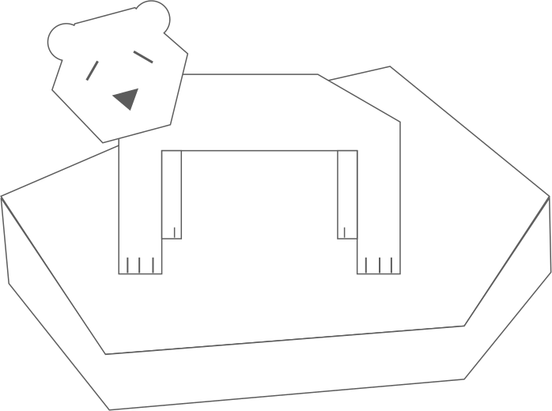

polar bears are incredibly beautiful creatures. Entirely unique in their appearance,
there are no other animals quite like them. Weighing in at around 772 to 1,543 lb they
are very large creatures, who through evolution have been designed to withstand the
incredibly low temperatures that they face in their habitats (Carl). The polar bear
mostly resides in the Arctic Circle, the Arctic Ocean, the Arctic Ocean’s neighboring
seas, as well as the surrounding land masses (Carl). There is a very common theme
amongst these places, and that is...
that polar bears love the cold.
Similar to other mammals at the top of their respective food chains, polar
bears have a very low reproductive rate. Polar bears only tend to give birth
to one or two cubs every three years or so and even then, polar bears don’t
begin to reproduce until they are at least five or six years old (WWF). Once
polar bear cubs are ready to leave the den, their mother will take them out to
floating sea ice in order to teach them how to hunt seals. These seals (and
therefore the floating ice that they come up onto) are absolutely critical for the
viability of polar bears as a species (WWF). These seals that they hunt provide the
mama polar bears and their cubs with sufficient fat to survive seasons when seals
are not readily available. When polar bears find themselves in these seasons they are
faced with long periods of fasting, and fewer and smaller baby cubs (Sterling).
Photos have recently surfaced
of shockingly skinny polar bears that are clearly being deprived of food,
and they are quite hard to look at. It’s really quite tragic (CBC). This,
coupled with the fact that polar bear populations are on the decline is
incredibly concerning. In a study conducted in 2016 by Trent University,
it was reported that polar bear populations have declined by nearly a fifth
compared to an original study in 2011 (Trent University). That’s a 17% drop
in only five years, which I believe to be a huge cause for concern. The point
that I would like to illustrate here is that polar bear populations are
extremely sensitive to change, and they require a very particular set of
circumstances to thrive and flourish as a species. With polar bear populations
on the decline, this is beginning to put them in an incredibly vulnerable
position.
In many languages
polar bears are suitably referred to as “ice bears”, as ice is such a key
component and factor in a polar bear’s livelihood (WWF). Unfortunately,
these patches of sea ice are disappearing (Hansen). According to a study
published in the Atmospheric Chemistry and Physics journal, arctic ice is
beginning to melt nearly twice as fast at it should be, due largely in part
to rising Co2 levels that humans have been polluting our atmosphere with
(NASA). These changes are largely causing this tragic influx of bears, as
the Russian branch of the World Wildlife Fund claims blames climate change
for the drastic change in bear populations, as smaller ice caps means less
opportunity for polar bears to hunt seals for food (WWF). This in turn is...
causing polar bears to search elsewhere for food.
The northern Russian town of Belushya Guba, also known as
Sturgeon Bay, is a military community of just over 2000 people.
This past week the city’s declared a state of emergency, as several
dozen polar bear families have made their way into the town, making
themselves at home. The bears have been seen digging through dumpsters
and investigating people’s homes, scavenging for food (Brown). The
city has declared this as a full-blown occupation and is currently at a
loss as to what they can do to deal with this problem.
This begs the question:
What can be done to stop this? As various human activities have
had detrimental effects on other animal species, we’ve often times
tired various conversation efforts to reverse these effects. Sometimes
successfully, other times unsuccessfully (Indiana University). One of the
biggest impacts that we can make it reduce our carbon footprint, and in
turn make an effort to emit way less C02 into the Earth’s atmosphere. A
great number of people seem to drive their own personal gas-powered vehicles
to work every day while many of them could easily take public transit instead,
residing their impact on the atmosphere. The United States Environmental
Protection Agency claims that “A typical passenger vehicle emits about 4.6
metric tons of carbon dioxide per year” (EPA). This is staggering when you
consider the sheer amount of cars you see on the road on any given day.
Instead of driving to work every day, why not consider taking public transit?
Doing so can even have several additional benefits such as saving individuals
money wasted on gasoline and parking. When the weather is nice during the summer,
why not ride a bike? Biking to work every day has even reportedly saved individuals
thousands of dollars a year (CNBC).
Greener forms of transportation
are becoming more and more viable, as innovative new options
to move from place to place are becoming much more commonplace.
The new baseline price of the Tesla Model 3 electric car is only
thirty-five thousand dollars, which is quite affordable all things
considered. It has an EPA-rated mileage of 220 miles on a single
charge, making it more than capable of replacing most traditional
vehicles or personal transport (Sendy). Telsa has even begun the development
and production of what they are calling Solar Roof, seamlessly-traditional
looking roof panels that actually work as fully functioning solar panels.
These are being developed as a means to eventually replace traditional means
of powering one’s home, leading to net-zero solar electricity and the
drastically reduced carbon footprint of households (Tesla). On top of rethinking how you commute...
there are numerous other ways
one can help save the polar bears by reducing
their carbon footprint. According to a series of
studies conducted by the United Nations University,
the simple most significant way one can reduce their
carbon footprint is by reducing or eliminating farmed meat
from their diets (Carrington). According to the United Nations
University “Emissions from livestock, largely from burping cows
and sheep and their manure, currently, make up almost 15% of
global emissions. Beef and dairy alone make up 65% of all livestock
emissions” (UNU). Not only could reducing consumption be good
for your health, but it can also be good for the livelihood of
polar bears.
One of the most tragic things
about humanity as a whole is that by nature, it seems like
we are a generally selfish species. Most of us know that our
actions are causing detrimental effects on the planet, but many
of us are resistant or stubborn to change. It seems like many
of us put our own desires above caring for the collective good
of our planet, and this is bad news for polar bears. If serious
actions are not taken soon, we very well might live a future in
which polar bears no longer exists. It would be a shame for
such a beautiful species to go the way of the dodo, to no fault
of their own. Hopefully, we find a way to reverse the direction
that climate change is taking, or else this soon might be the
case.


 
